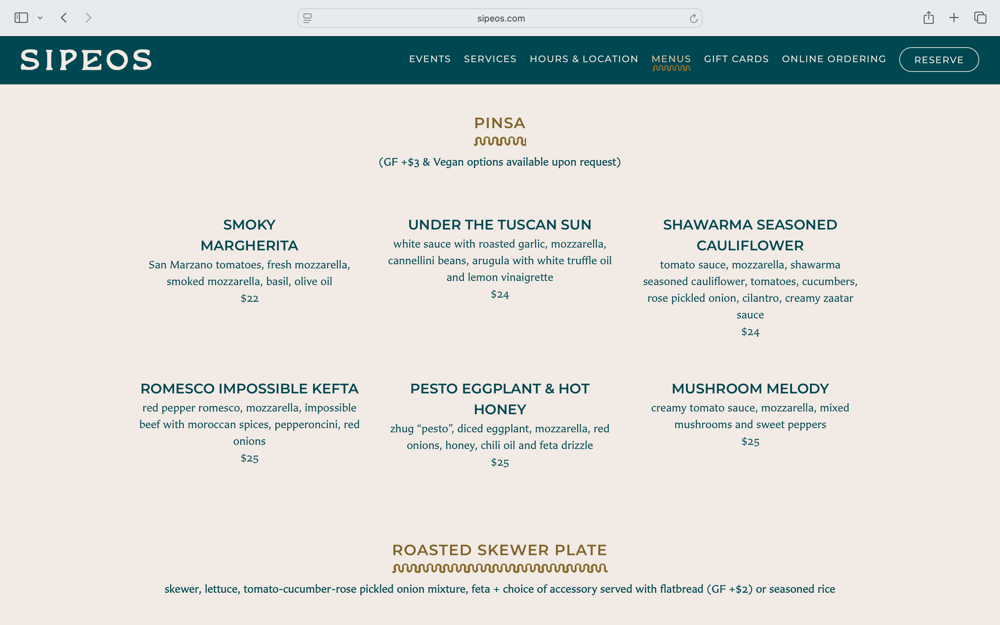
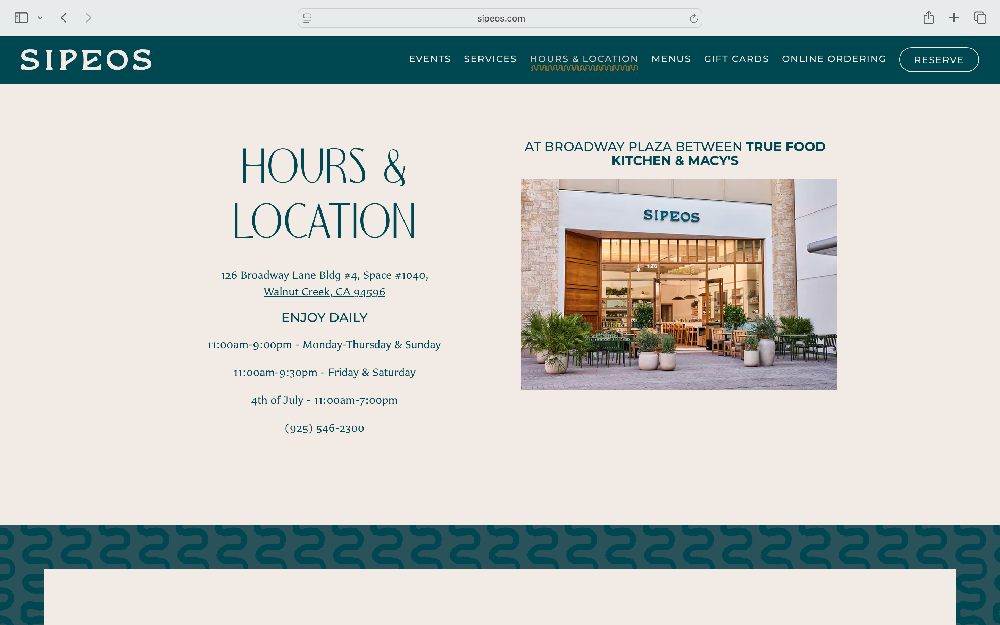

Final project proposal
Introduction
Common Grounds
Common Grounds is a community-based, eco-friendly vegetarian restaurant. Based in inclusivity, every dish can be customized to vegan, gluten free, etc without any additional charge. The mission is to create an inviting and accesible dining experience no matter ones dietary restrictions or prefrences.
Target audience
The main people using this site are customers with a variety of dietary restrictions, such as vegan or celiac, looking for a restaurant that doesn't just accommodate them but caters to them specifically.
The primary goal of users is to learn about the restaurant's location, hours, mission statement and menu to decide if this is somewhere that they want to eat at.
Comparative analysis
Sipeos


Peace Pies


Good Karma


Website content
Home
Inclusive and accessible dining for our community, always.
At common Grounds we are dedicated to providing a healthy, plant-based, cruelty-free, and customizable experience you’re sure to love.
[A tofu bowl, salad with bread, deconstructed vegan burger, smoothie, and coffee on an outdoor wooden table.]
About
Common Grounds is a community-based, eco-friendly restaurant of plant-based dishes. Growing tired of dining our with limited options or paying extra for substitutions we opened Common Grounds as an inclusive option for the community. Every dish is free of meat and can be customized to vegan, gluten free, etc without any additional charge. Our mission is to create an inviting and accessible dining experience no matter ones dietary restrictions or preferences. Every detail, from the menu to the decor, embodies a commitment to sustainability, community, and a love for plant-based cuisine.
At our establishment, we honor Earth's resources by using recyclable packaging and staying resourceful with our recipes. Whenever possible, we minimize waste by repurposing surplus ingredients into new specials and infuse our menu with locally grown, seasonal produce, maintaining true quality through minimal processing. Whether a dedicated vegan, celiac warrior, or simply curious about plant-based dining we welcome you to our little community!
[A group of four people enjoying a meal and toasting with drinks at an outdoor restaurant.]
Menu
Rainbow Garden Salad - lettuce, fried tofu, tomatoes, cucumbers, seasonal veggies, dressing of your choice. $10
Pasta with Impossible Meatballs - seasoned impossible meatballs, tomato sauce, parmesan cheese, whipped feta drizzle, served with your choice of pasta. $21
Cauliflower Wings - battered and roasted cauliflower tossed in buffalo sauce served with vegan ranch. $11
Sunset Bowl - Acai bowl with banana and strawberry base topped with granola, kiwi, blueberries, and chia seed pudding. $16
Yellow Coconut Curry - Our signature curry with roasted rainbow carrots, kabocha squash, yams, butternut squash, cauliflower, zucchini, and brown rice. Finished with fresh mango. $22
Garden Burger - Choice of Impossible or black bean patty served with pickles, tomatoes, lettuce, and house made sauce with a side of fries. $18
Red Pepper Hummus - House made spicy hummus served with seasonal vegetables. $12
Whipped Banana Bread - Homemade banana bread slide served with whipped chocolate mousse. $9
[A salad with greens, tofu, and peppers served in a black bowl.]
Location
410 West Emerson Street San Luis Obispo, CA 93410
Enjoy Daily from 11am - 9pm
[Front of restaurant with green awning, outdoor seating, and plants.]